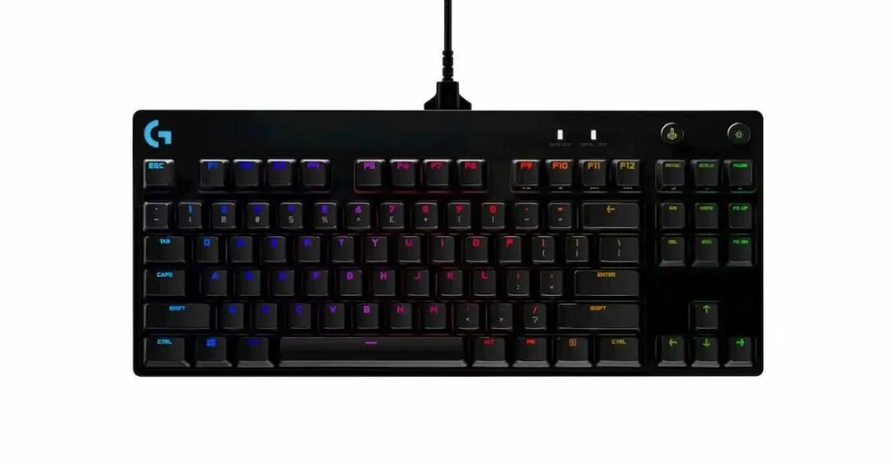
记忆负担
快捷键的数量很容易超出记忆负担。⌘⌥⇧K 是什么?先回忆功能,再回忆键位,再让手指找过去——快捷键多到一定程度,这个过程就会打断思路。
不是要替代键盘,而是与键盘鼠标配合:把快捷键操作做成独立的按钮,减少记忆负担。
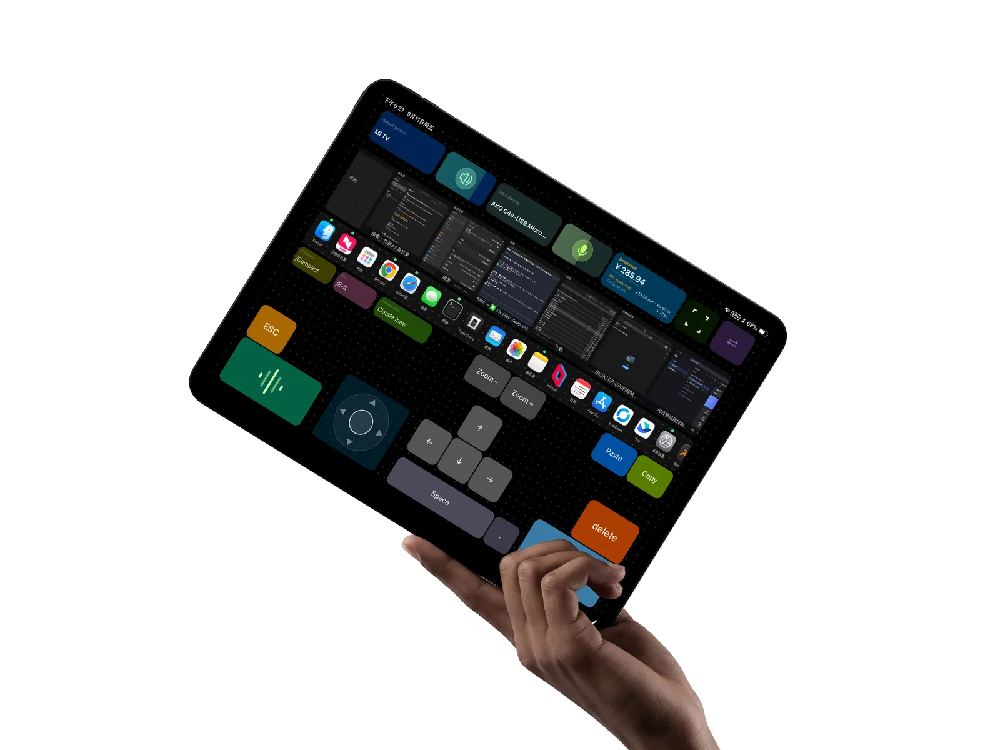
问题
物理键盘诞生于 1870 年代。150 多年了,你还在用那套交互逻辑控制你的电脑。

快捷键的数量很容易超出记忆负担。⌘⌥⇧K 是什么?先回忆功能,再回忆键位,再让手指找过去——快捷键多到一定程度,这个过程就会打断思路。
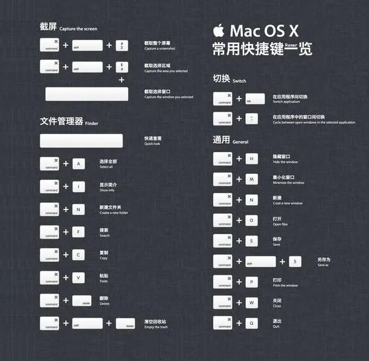
手机能认得你的脸,电脑能认得你的指纹,但你还在背快捷键来操作电脑。你的大脑——地球上最强的运算能力——用来背快捷键,简直是资源的浪费。
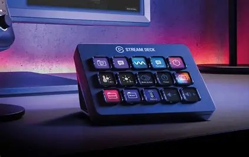
实体宏键盘:按键可以自定义,样子和大小却不会变,自定义多了,记住每个键的用途依然是负担。Stream Deck 体验不错,价格从千元级起步。
然而,情况也有变化
AI 时代,Vibe Coding 对键盘的需求反而降低了,对输入方式提出了新需求。
一个可以完全定制的、用于操作电脑的输入界面。Mac 上跑一个服务端,平板用浏览器连入,仅此而已。
延迟低到你感觉不到。
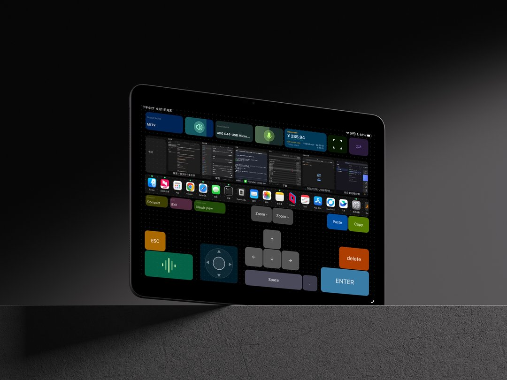
功能
拖拽布局、颜色尺寸字体圆角音效图标、框选成组、无限撤销、设备预设、滚轮缩放。所见即所得。
每一次触摸 → WebSocket → CGEvent 注入 macOS。低到你感觉不到。
换一个应用,面板自动换布局。一键切换 Profile。
浏览器打开网页即用,不限设备,包括手机
窗口管理、音频设备、Dock、麦克风电平——系统级能力,直接调用。
v1 早鸟验证阶段,免费,代码完全开放。
两个预设 Profile 开箱即用,拖拖拽拽就成型。
场景
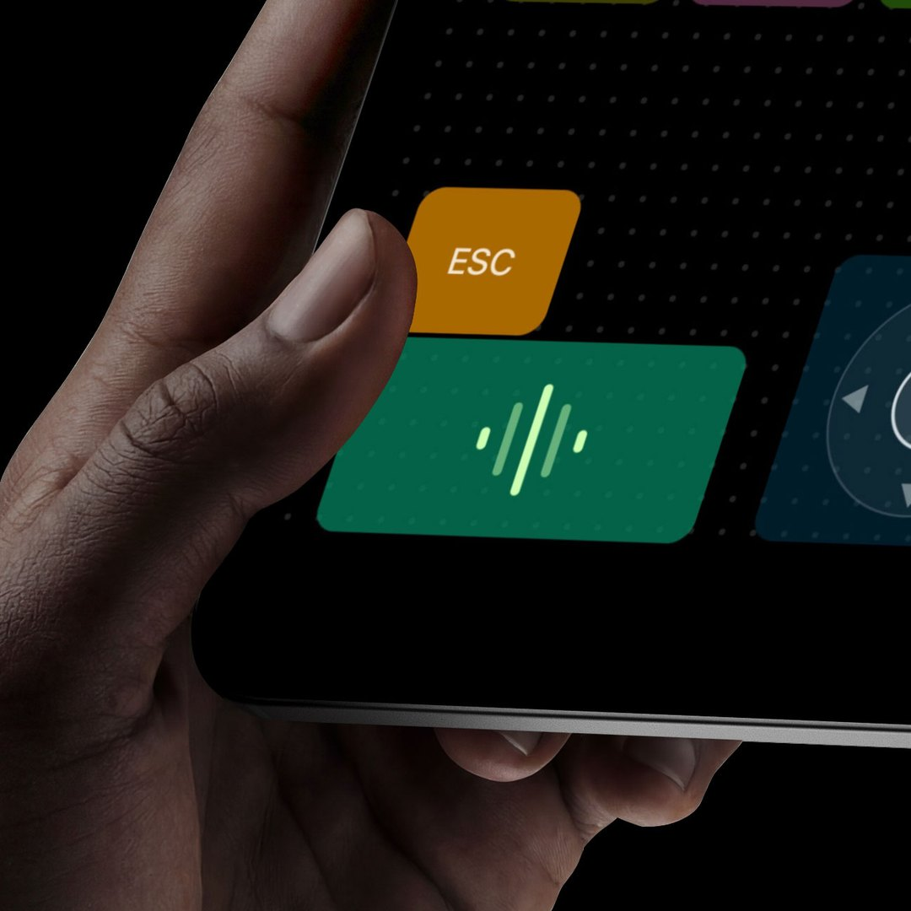
你在做 vibe coding,AI 在写代码,你要用语音说下一段 prompt。键盘上:找到语音输入快捷键(取决于语音识别软件,是哪个来着?)→ 按下去 → 说话 → 再按一下结束。
Tapflow 上:平板旁边有一个按钮,上面写着「🎤 说话」。点一下,开始说。说完了,再点一下。
不是「少按了几个键」的问题,是你不用打断思路去想那个快捷键是什么的问题。
macOS 的窗口贴靠功能很强,但触发方式呢?要么背快捷键,要么每次都用鼠标点击。
Window Swipe 组件把它做成了一个摇杆:手指往上滑 → 窗口全屏。往左滑 → 贴左半。往右下滑 → 贴右下角。点一下最大化,长按全屏。
跟打游戏一样——排列窗口,根本不应该用快捷键。
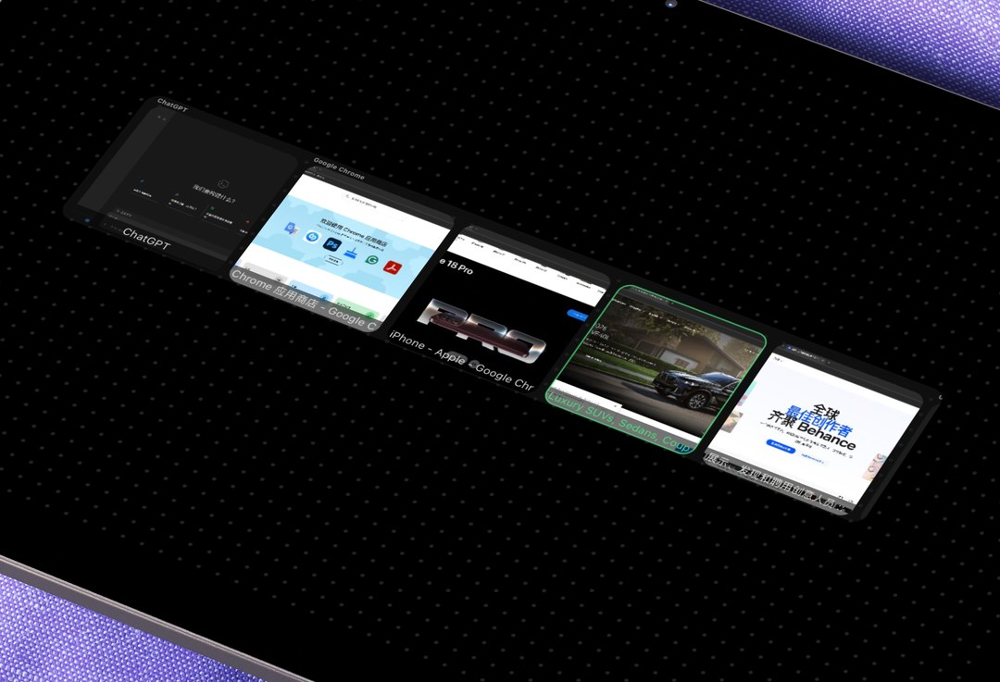
⌘Tab 切窗口是盲猜——你只能看到 App 图标,看不到窗口内容。开了三个 VS Code 窗口?猜吧,看哪个是你想要的。
Window Switcher 把所有窗口的实时缩略图排出来,按应用分组,横向滑动。哪个窗口里有什么,看得一清二楚。点一下,切过去。
看见,再切换。
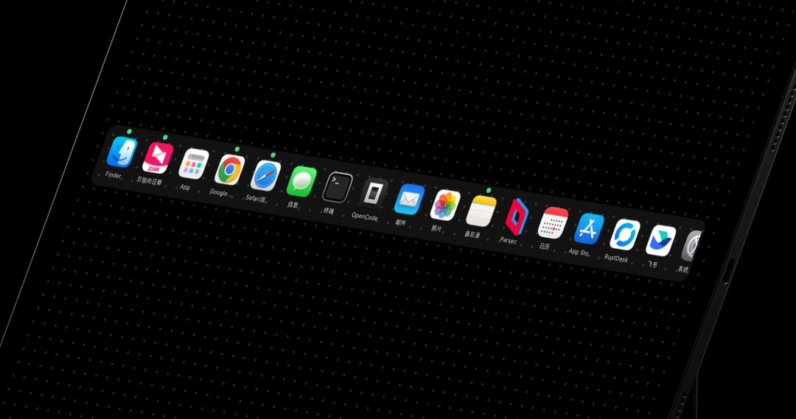
macOS 的 Dock 常年占着屏幕底下一排,隐藏了又不方便召唤。
把 Dock Panel 放到 iPad 上:从平板启动 App、退出 App。Mac 屏幕上的 Dock 可以隐藏起来——屏幕全部留给工作。
把屏幕还给工作。
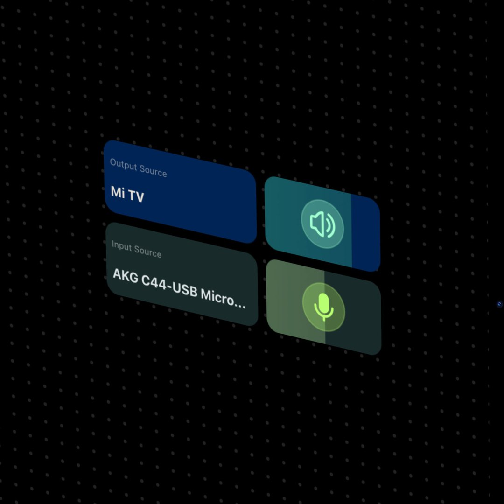
会议室里要切 AirPods。工作室里要切外放。打游戏切耳机。通常的做法:系统设置 → 声音 → 输出 → 找到设备 → 点一下。每次都这样。不直观又麻烦。
Audio Out 组件:平板上一个按钮,点一下弹出所有设备列表,选一个。长按直接轮换。
一秒。
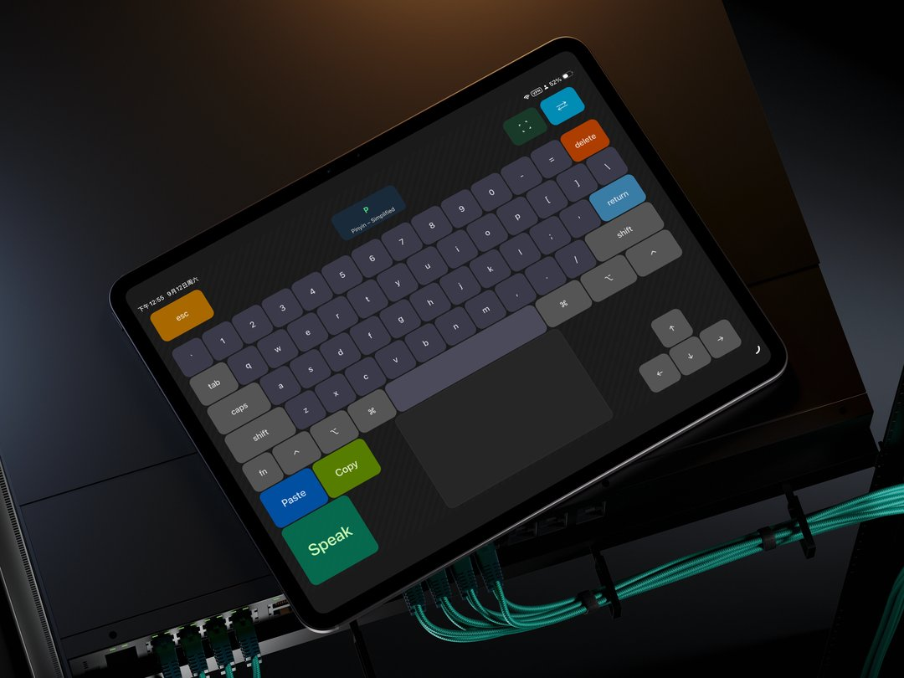
平板屏幕足够大。在上面铺满按键、触控板、手势区、窗口摇杆——iPad 变成一块完全按你的习惯定制的输入面板。
每个键都按你的习惯来:大小、颜色、图标、声音,全都由你决定。
这不是为了替代键盘,而是如果你需要的时候,它有能力随时转换
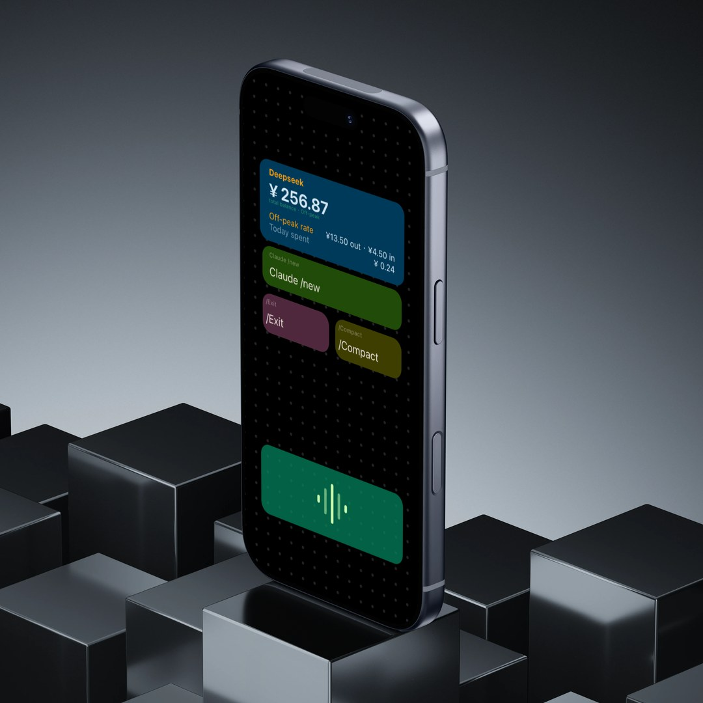
Vibe Coding 里最高频的操作,单独拎出来,做成一个个快捷键按钮。放在任何设备上都可以。
这些按钮不仅能输入,还能输出:你可以在按钮上直接看到 DeepSeek 的余额——输入面板,同时是信息面板。其他 AI 工具的支持,会逐步加入。
按钮,不只用来按。
Tapflow 只在局域网内的设备互相访问,不获取不上传任何信息到外网
DMG 内含 2 个预设 Profile,导入编辑器即可试用。
系统要求:macOS 26+ · Apple Silicon(M1 及更新)
上手
从 GitHub Releases 下载最新版。
双击会弹「无法验证开发者」→ 系统设置 → 隐私与安全性 → 仍要打开。只需设置一次。
辅助功能 ✅ 注入键盘事件 · 屏幕录制 ✅ 窗口缩略图 · 麦克风 ❌ 可选,音频电平。
launchd 守护:开机启动,崩溃自动拉起。
浏览器打开 http://<Mac-IP>:8082。不用装任何 App。
Mac 上打开 http://localhost:8082/editor,所见即所得。
关于「无法验证开发者」
v1 为 Developer ID 签名(未公证),Gatekeeper 会软拦截一次。这是未公证应用的标准流程,不是安全风险;设置一次之后永远正常打开。我们在 FAQ 里写了每一步。
FAQ
当前版本为 Developer ID 签名(未公证),Gatekeeper 会软拦截一次。系统设置 → 隐私与安全性 → 点「仍要打开」即可,只需设置一次,以后正常打开。
确认同一 WiFi。菜单栏图标下拉显示 Mac IP。检查防火墙放行 8082。
系统设置 → 隐私与安全性 → 辅助功能 → 确保 Tapflow 已勾选。
系统设置 → 隐私与安全性 → 屏幕录制 → 确保 Tapflow 已勾选。
不。浏览器打开网页即可。支持 PWA 添加到主屏幕。
目前仅 macOS(核心依赖 CGEvent + PyObjC)。